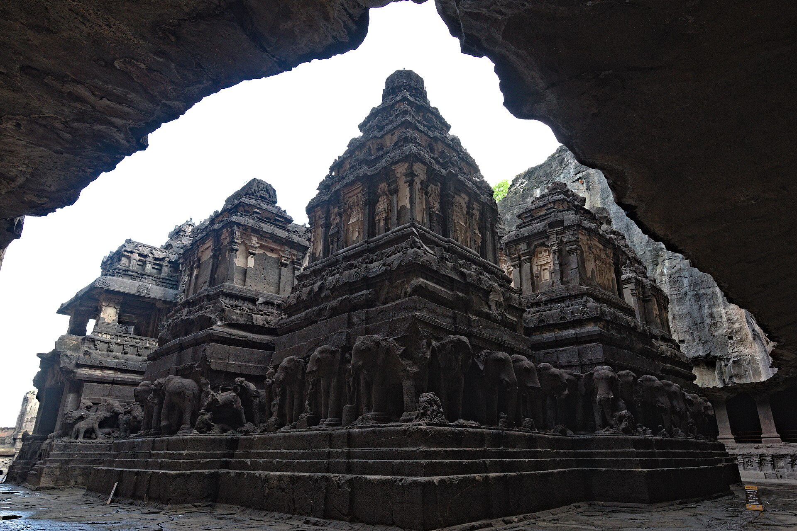
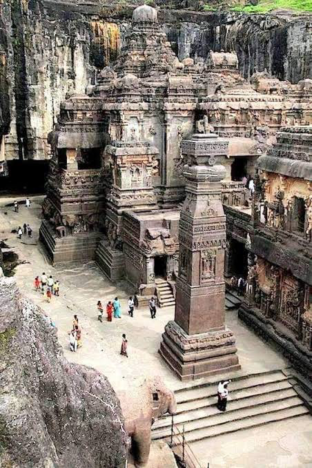
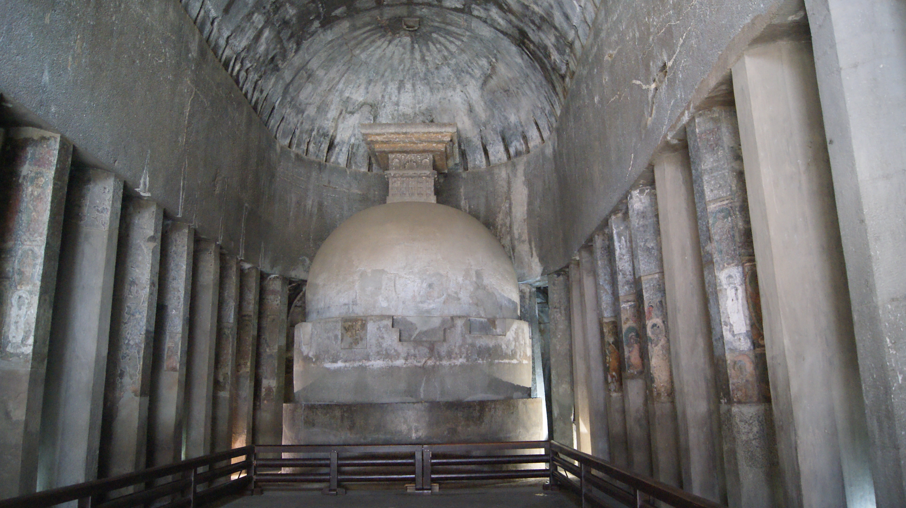

I. The merchant who counted kings
Around 851 CE, an Arab merchant named Sulaiman al-Tajir — Sulaiman "the Merchant," a title that was itself a small biography — wrote down an assessment of the world's great powers that has survived, in one form or another, for over a thousand years. There were four kings, he said, who stood above all others: the Caliph, sovereign of the Arabs and lord of the faithful; the Emperor of Byzantium; the Emperor of China; and a fourth, ruling somewhere in the Deccan of southern India, whom Sulaiman called by a title rather than a name — the Balhara, a merchant's rough transliteration of Vallabharaja, "beloved king." No embassy had sent him to make this judgment. No treaty required it. He was a trader, assessing the world the way traders assess anything: by what actually worked, who could actually be dealt with, whose word actually held.
The king he meant was almost certainly Amoghavarsha I, who by 851 CE had already ruled for close to four decades from a capital most of the modern world has never heard of: Manyakheta, in what is now northern Karnataka. This is worth sitting with before anything else, because it inverts the usual order of things. Most history arrives already knowing which kingdoms matter and works backward to explain why. Sulaiman did not know that. He had no reason to flatter a Deccan king, no diplomatic incentive, no audience to please beyond other merchants planning their own routes. He named the Rashtrakutas as one of four great powers on Earth because, from where he stood — inside the actual commercial traffic of the ninth-century world — that is simply what the evidence showed him.
Sulaiman was not a lone voice. His account survives partly because a later compiler, Abu Zayd al-Sirafi, gathered and expanded it around 916 CE, adding the testimony of other merchants who had themselves sailed the same routes — and the geographers who followed in the ninth and tenth centuries largely agree with him. Ibn Khordadbih, writing his own geographical compendium for the Abbasid postal service around 870 CE, and al-Istakhri, working a century later, both describe the same southern Indian power in similar terms: wealthy, stable, and worth doing business with.1b "Balhara" itself was not a name at all but a title these Arab writers kept reapplying to whichever Rashtrakuta king currently held Manyakheta, generation after generation — the way a modern trade report might simply say "the throne" rather than track every succession. That a foreign merchant vocabulary needed no updating across multiple reigns is itself a kind of evidence: continuity legible enough, from three thousand kilometres away, that the details of who exactly wore the crown barely mattered to the men actually moving goods.
This is the third part of a story that began with a river town that had no coastline, and continued through a workshop town three hundred kilometres from the sea. Neither Banavasi nor Aihole made an obvious world power. And yet both towns kept producing, generation after generation, an unusually capable class of traders — the same merchants whose descendants would go on to build what is now widely regarded as the earliest organisation resembling a truly global trading house, reaching from the Deccan to Sumatra and beyond. Manyakheta belongs in between these two moments: a capital ruling over exactly the world that made the guild's later reach possible, even if the guild itself does not yet have a name in this part of the story. It ends, this time, somewhere genuinely odd for a power of this scale: a foreign merchant could name this dynasty among the four greatest on Earth, and yet its capital sat neither behind Banavasi's river-loop nor inside Badami's fortress-cliffs — the two defensive logics every previous capital has relied on so far — but in comparatively open country, a city that announced its importance through reputation rather than through the ground it stood on. Its own name meant something close to "the house of pride," and the dynasty that built it rose, once again, from inside the very system it would go on to conquer.
II. The vassal who counted higher
Dantidurga's own family had been climbing for at least a generation before his campaigns began. His father, Indra I, ruled from Berar as a Chalukya feudatory in his own right, and secured his own standing through a marriage the sources describe in strikingly blunt terms: a rakshasa vivaha, marriage by abduction, of a Chalukya princess named Bhavanaga, seized — in the words of a later Rashtrakuta charter — by force from her own marriage pandal at Kaira. It reads, on its face, like scandal. It functioned, in practice, like strategy: Indra I was very likely present at Kaira as a Chalukya feudatory himself, called up for a joint campaign against Valabhi, and the marriage that resulted — however it began — tied his own line by blood into the very dynasty his son would one day end.0b
Dantidurga did not appear from nowhere, in other words. By the 730s, as the previous part has already traced, he was a Chalukya feudatory — a trusted subordinate, not a rival — fighting alongside the Badami Chalukyas against the Umayyad Caliphate's advance into Gujarat in the very years the Caliphate itself was at its most expansive.1 It is the same pattern we keep returning to: Kadamba officials becoming Chalukya kings, Chalukya vassals becoming Rashtrakuta emperors. Power in this world rarely arrived from outside. It climbed, patiently, from within.
By 753 CE, Dantidurga had judged the moment right. He defeated Kirtivarman II, the last Badami Chalukya, and ended a dynasty that had ruled the Deccan for over two centuries.2 His own inscriptions — read, as always, with appropriate scepticism for the genre — claim campaigns reaching from the Mahi river in Gujarat to the Mahanadi in Kalinga, against the Gurjaras of Malwa, the Chalukyas of Lata, and rulers as far afield as Kosala and Kanchi.3 More reliable than the geography is the theatre he staged to announce it. Around 752–753 CE, at Ujjain — a city already carrying centuries of accumulated royal legitimacy — Dantidurga performed the Hiranyagarbha, the rite of the golden womb, which allowed him a rebirth without the inconvenience of first having to die. Freshly sanctified with holy waters, he climbed into a golden vessel cast in the shape of a cow and entered it through its mouth. Crouched inside, he underwent, in miniature, an entire gestation: priests performed over him the same rites ordinarily reserved for a pregnant woman, conception and the parting of the hair and the safeguarding of the womb, compressed into a single afternoon. Drawn back out, he was given the naming-rite owed to a newborn, and a chant marked what he had become — a man who had entered martya, merely mortal-natured, and climbed out divya-deha, holding a divine body. The vessel itself, gold worth a small kingdom, went to the priests who had staged his rebirth: a fee paid, quite literally, in the raw material of the divinity he had just acquired.4 The choice of ritual was not neutral. Two centuries earlier, Pulakeshin I had performed this same Hiranyagarbha to announce the sovereignty of the Badami Chalukya line its own founder was staking out — the very dynasty Dantidurga had just finished dismantling.^(4b) He was not merely borrowing a generic tool of legitimacy; he was reaching for the founding gesture of the house he had replaced, and using it on himself. Washed clean of any lingering question about a feudatory family's lesser origin, he was ready for what came next. The Samangad copper plates record a detail sharp enough to read as deliberate theatre in its own right: the Gurjara king of Malwa attended the ceremony not as an equal, but in the specific ritual role of pratihara — doorkeeper — a pointed pun aimed at the Gurjara-Pratihara dynasty's own name, staged for an audience certain to catch it.5
Dantidurga hedged his new legitimacy with an older tool than ritual theatre: marriage. He gave a daughter to Nandivarman II Pallavamalla, the Pallava king of Kanchi — binding, at a stroke, the newest imperial house in the Deccan to one of the oldest dynasties in the south, the same Pallava line whose earlier kings had defeated and killed a Chalukya emperor at Vatapi barely a century before.5b It is a marriage alliance in the same register already seen twice before: Kakusthavarma's Gupta and Vakataka matches, Pulakeshin II's Ganga bride — legitimacy purchased in bloodlines because it could not yet be assumed from lineage alone.
Dantidurga died without a male heir, and the throne passed to his uncle, Krishna I — the king whose own ambitions would shortly reshape a mountainside at Ellora, and whose story belongs to the next section.6 But before the mountain, there is the matter of where all of this actually happened, and why.
Companion piece — World ContextElsewhere, at the Same Time
While the Kadambas and Chalukyas ruled the Deccan, Rome fell, Justinian built the Hagia Sophia, and an East Anglian king went into the ground at Sutton Hoo. A parallel timeline for context, not connection.
Open the full timeline →III. A house built for pride
Manyakheta — the name is generally read as "the house of Manya," though popular etymology has long preferred a bolder gloss, something closer to "the abode of honour" or "the house of pride." Its modern name, Malkhed, sits in Kalaburagi (Gulbarga) district, in the dry northeastern stretch of Karnataka, a considerable distance from every site visited so far — further from Banavasi's river-loop, further from Aihole's workshop valley, further still from the sea than either.7
This was, deliberately, a different kind of capital from Vatapi. Where Pulakeshin I chose a defensible cleft between sandstone cliffs, Manyakheta sits in comparatively open country — a choice that reads less like a fortress-builder's instinct and more like a statement of confidence, a dynasty secure enough in its own reach not to need a mountain at its back. The Kagina river runs nearby, a tributary feeding eventually into the Bhima and then the Krishna system — meaning, in a pattern already familiar from Aihole, that Manyakheta's own water, like Aihole's, drains east toward the Bay of Bengal rather than west toward the Arabian Sea.8 A dynasty capable of being called one of the four great kingdoms on Earth by a foreign merchant did not sit on the coast, did not sit on a river that reached the coast, and did not, on the evidence so far, need to.
The ground itself is different too. This is Deccan Trap country — black, basalt-derived soil, the same volcanic rock later carved into the Kailasa temple, formed from lava flows tens of millions of years older than anything else described so far. It holds water poorly compared to the alluvial river valleys around Aihole or Banavasi, but it is exceptionally fertile once worked, particularly for cotton — a crop we will return to when the question turns to what Manyakheta actually exported.8b The dynasty's own name may reach back further than its founding king. One tradition traces "Rashtrakuta" to the Rastikas or Rathikas, a clan named in Ashoka's own third-century-BCE edicts as a people of the Deccan — a genealogical claim spanning a thousand years, and one that should be read as a dynasty reaching for the deepest possible legitimacy rather than as settled fact.8c
The dynasty’s own emblem, curiously, was not new either. Rashtrakuta copper-plate seals carried Garuda, Vishnu’s eagle-mount, alongside images of the rivers Ganga and Yamuna — and the royal banner Manyakheta’s kings marched under, the Palidhvaja, had originally belonged to someone else entirely: the Badami Chalukyas, who had first raised it as a victory-standard against north Indian kings. The Rashtrakutas simply inherited it, unaltered, as the price and privilege of having replaced the dynasty that once carried it — the same absorb-rather-than-erase instinct that will recur, at far greater scale, in a mountainside outside Ellora. Dantidurga’s own seal stayed unchanged even as his status did not, still reading as a feudatory’s device long after he had made himself an emperor; only under Amoghavarsha I did the design begin to grow more elaborate, gaining a snake gripped in each of Garuda’s hands, Ganapati and a ceremonial lamp worked into the corners, Parvati standing before a lion, a svastika near the base. Later kings kept adding to it rather than starting over — Indra III folding in a linga and an elephant-goad, Govinda IV’s seal surrounding Garuda with a dagger, bow, and arrow, Krishna III’s the most crowded of all — a small, private register, carried on every grant a scribe ever sealed, of just how much confidence each reign had accumulated to spend.8d
Companion piece — Geography & ExtentOne Empire, Six Modern States
A schematic map of the Rashtrakuta empire's reach, overlaid on today's state borders — ports known and inferred, Ghat passes, and how far campaigns actually travelled from Manyakheta.
Open the map →IV. What the mountain proves
If Kirtivarman I's conquest of Banavasi and Kirtivarman I's absorption of the Kadamba tax system showed one kind of continuity, Krishna I's most famous act shows another, more literal one. Sometime after 756 CE, Krishna I commissioned what remains, by most measures, the single most extraordinary building project of the entire early medieval Deccan: the Kailasa temple at Ellora, carved not built — a structure excavated downward and inward from a single mass of basalt, top to bottom, so that its builders worked in reverse of every other temple already described, removing rock rather than stacking it, with no margin for correction once a cut was made. Current scholarship credits the temple’s core construction not to Krishna I alone but to a concentrated, roughly twenty-year campaign spanning both his reign and Dantidurga’s before him — meaning the project outlasted the very transition of power this whole account has just traced, begun by the dynasty’s founder and completed, or very nearly completed, by his successor.9

The debt it owes to Pattadakal is not a matter of vague stylistic resemblance. The Kailasa's overall form — its plan, its proportions, its Dravida-style tower — is now generally read as a direct, deliberate reworking of the Virupaksha temple, the very building Queen Lokamahadevi financed from her own independent treasury a generation earlier.10 A Rashtrakuta king, having just ended two centuries of Chalukya rule, chose to make his own greatest monument a scaled-up echo of the temple his predecessors' queen had built to commemorate a Chalukya victory. Conquest, once again, absorbed rather than erased what it defeated — the same pattern already traced through Jayasimha and Ranaraga's careers, through Kirtivarman I's inherited tax categories, now repeated at the scale of an entire mountainside.
Krishna I's reign is otherwise remembered for subduing the Gangas of Mysore, extending Rashtrakuta authority south into territory the Chalukyas had never fully controlled.11 But it is the mountain that endures as the clearest possible answer to a question worth asking of every dynasty in turn: what does the stone actually prove? At Banavasi, the proof was coin hoards and a merchant's own boast. At Aihole, it was the sheer proliferation of experimental forms. At Ellora, the proof is more direct than either — a single monolithic structure whose construction required removing an estimated two hundred thousand tonnes of rock, without the option of stopping to reconsider halfway through.12 Estimates of how long the work took vary widely, from a single extraordinarily concentrated campaign of a few decades to a project that continued, more plausibly, across several reigns after Krishna I's own — meaning the Kailasa may have outlived the very king who conceived it, a monument the dynasty kept paying for long after its founder was gone.12b
The Rashtrakutas did not stop at Ellora's Hindu caves. A separate, later group at the same site — the Indra Sabha, a two-storeyed, richly carved Jain cave complex — records continued royal and elite patronage of Jainism at Ellora across the ninth and tenth centuries, the same institutional pattern already visible at Manyakheta's own court through Jinasena's guruship.12c A single hillside, in other words, carries both halves of the Rashtrakuta religious settlement already sketched here: a mountain-sized Shiva temple standing beside a Jain excavation, patronised by kings whose own private devotion did not always match the god their grandest public monument was built for. A state capable of committing that much labour, that irreversibly, to a single religious statement was not merely wealthy. It was confident enough in its own continuity to gamble an entire mountain on it — twice, in two different faiths, without apparent contradiction.
Some of the labour that raised the Kailasa may not even have been local. The temple’s tall plinth is carved with elephants and lions in a style scholars connect directly to Pallava sculpture, and it has been argued that Pallava sculptor guilds were drawn north to Ellora specifically by Rashtrakuta patronage — skilled hands following royal commissions across the same dynastic lines the temple itself was built to announce a victory over.12d No foundation inscription survives at the Kailasa temple itself, worth stating plainly rather than glossing over: the whole attribution to Dantidurga and Krishna I rests on external evidence — copper-plate grants, the iconographic programme, and a separately inscribed neighbour, the Dashavatara cave, directly linked to Dantidurga by its own inscription and stylistically bridging to the (uninscribed) Kailasa. The attribution is strong. It is also, formally, an inference rather than a signature the builders left behind.

A second site, forty kilometres north, extends this same pattern of long Rashtrakuta-era religious continuity somewhere it is easy to overlook. The Buddhist caves at Ajanta had fallen quiet by the mid-sixth century, their great patrons among the Vakataka nobility gone and their own dynasty soon to follow. Yet a single inscription survives in Cave 26 — the site’s own chaitya hall, its stupa and pillars still carrying traces of paint — naming a Rashtrakuta patron and dating to the eighth or ninth century.12f It is a solitary record, not evidence of a revived monastic community on Ajanta’s earlier scale, but it is enough to show that the site had not simply been abandoned to the jungle that would eventually swallow it until a British officer on a tiger hunt rediscovered it in 1819. Someone, under Rashtrakuta rule, still climbed the gorge path to Ajanta, still found the chaitya hall worth marking with their own name. Fine art in this period was not confined to Ellora alone; it simply left, at Ajanta, a much fainter trace.

A Mountain, Carved Downward
How the Kailasa temple was actually cut from the rock, what current scholarship credits to Dantidurga versus Krishna I, and what the evidence does and doesn't actually say.
Read the full piece →V. Five reigns, two centuries
Krishna I's successors ruled through what most historians treat as the Rashtrakuta dynasty's genuine peak — roughly two centuries during which a Deccan capital, for the only sustained stretch in this whole series, could plausibly claim to matter on a continental rather than merely regional scale.
Dhruva Dharavarsha (r. 780–793) is generally credited as the reign that turned Rashtrakuta ambition northward in earnest. He defeated both the Gurjara-Pratihara king Vatsaraja and the Pala king Dharmapala — the two great rival powers of north India in this period — and became, in the process, the first Deccan king to seize Kannauj, the ancient seat of imperial legitimacy on the Gangetic plain that both the Palas and the Pratiharas spent the better part of a century fighting over.13 The campaigns were not followed by annexation; the Rashtrakutas withdrew south again, their point evidently already made. His victory over the Ganga and Yamuna rivers themselves became a matter of court record: later Rashtrakuta inscriptions added the twin river emblems to the dynasty's own imperial insignia, a permanent heraldic boast that the family had once made rivers a thousand kilometres from home carry its mark.13b Something closer to the everyday texture of Dhruva's rule survives too, in an unexpected source: the Jain Harivamsha Purana, composed by Jinasena in 783 CE — within Dhruva's own reign — records a feudatory lord named Sankargana formally seeking the king's prior approval before making a land grant of his own, a small but real glimpse of the administrative chain of command actually functioning, rather than merely being described in an inscription's boilerplate.13c
His son Govinda III (r. 793–814) went further still, defeating Dharmapala a second time alongside the Kannauj ruler Chakrayudha, and shattering a southern confederacy of Ganga, Chera, Pandya, and Pallava rulers in the same reign — a Deccan power fighting successfully on two fronts a thousand kilometres apart within a single generation.14 The same Purana names a second feudatory, Buddhavarsa, seeking Govinda III's own approval for a land grant, suggesting the practice recorded under his father continued as ordinary administrative habit rather than a one-off flourish.14b It is worth noting, too, that Govinda III was not his father's eldest son — the succession passed to a younger prince judged more capable, a reminder that Rashtrakuta kingship, like the feudatory approvals just described, ran on functioning judgment as much as on rigid hereditary formula.14c
Amoghavarsha I (r. 814–878) is the reign already circled twice so far — through Jinasena's guruship and through Sulaiman al-Tajir's own verdict — and it deserves its full context here. Sixty-four years is an extraordinarily long reign by any premodern standard, long enough that Amoghavarsha's own personality, rather than his conquests, defined the era: a king remembered as favouring literature and religion over the battlefield, author in his own right of the Kavirajamarga and the Prashnottara Ratnamalika — the latter later translated into Tibetan — and a devoted follower of Jainism who nonetheless, as we will return to, presided over a dynasty whose most famous public monument was a temple to Shiva.15 Even his birth carries a specific, human detail: he is said to have been born around 800 CE at a place called Sri Bhavan, on the banks of the Narmada, while his father Govinda III was still returning from his own northern campaigns. His reign was administratively vast as well as long — sixteen separate Rashtras (provinces) by one count, a scale of governance the next section will examine properly.16 And the family's reach into administration was not confined to men: his own daughter, Revakanimaddi, is recorded governing the Edathore Vishaya, a district, in her own right — a woman holding real administrative office, not merely funding temples from a private purse the way Chalukya queens had a generation earlier.16b
Indra III (r. 914–929) restored the northern ambition Amoghavarsha's long peace had let lapse, defeating the Pratihara king Mahipala I and plundering Kannauj a second time — and it is this campaign that earned him Al-Masudi's explicit praise as the greatest king in India, independent corroboration of exactly the kind Sulaiman had offered two generations earlier.17 And Krishna III (r. 939–967) closes the dynasty's imperial arc where the previous section has already placed him: at Melpati in 959 CE, having broken the Chola crown prince Rajaditya at the Battle of Takkolam ten years earlier, having occupied Tondaimandalam north of the Kaveri, and having erected a victory pillar and temple at Rameshwaram — the furthest south any Rashtrakuta army had ever fought, at almost the furthest possible remove from Manyakheta itself.18
Five reigns, roughly two centuries, and a striking pattern sits underneath all of them: every major campaign just described was fought hundreds of kilometres from the capital that funded it --- in Kannauj’s case, comfortably over a thousand. A dynasty whose own city sat inland, on a river flowing the wrong way, nonetheless projected force to Kannauj in the north and Rameshwaram in the deep south — the same structural question already asked of Banavasi's pepper and Aihole's warhorses now applies, at imperial scale, to an entire army's reach.
VI. Ledgers, again, and a second channel
The Rashtrakutas did to the Chalukya administrative machine exactly what the Chalukyas had done to the Kadamba one two centuries earlier: they kept it. The five-tier hierarchy already traced through Aihole reappears here with new names on old offices — Rashtra (or Mandala, a province, headed by a Rashtrapati who was, on occasion, the emperor himself), Vishaya (district, under a Vishayapati), Nadu (a subdivision below the Vishaya, managed by a Nadugowda or Nadugavunda), and Grama (the village, headed by a Gramapati or Prabhu Gavunda).19 Amoghavarsha I's reign alone contained sixteen separate Rashtras — a figure that, set against the ninety-nine-thousand-village provinces Xuanzang once reported under Pulakeshin II, suggests either a genuine administrative reorganisation into fewer, larger units, or simply that different observers, in different centuries, were counting different things. Either way, the machine survived the change of dynasty intact enough to keep functioning.
At the centre sat a small cluster of named offices whose titles alone tell you what the state considered worth formally naming: the Mahasandhivigrahi, chief minister, marked out by five separate insignia of office; the Dandanayaka, military commander; the Mahakshapataladhikrita, effectively a foreign minister, responsible for relations and correspondence with other courts; and the Mahamatya or Purnamathya, prime minister in the fuller administrative sense.20 Succession to the throne itself, tellingly, did not run on strict primogeniture — Govinda III, as the previous section has already noted, was not Dhruva's eldest son, but the one judged most capable of holding an empire that now stretched from the Narmada to the Kaveri. A state this large evidently could not afford the luxury of automatic inheritance; it needed, or believed it needed, its actual best available candidate.
The army this administration funded and fielded followed the same threefold composition already familiar from the Chalukya chapters already covered — infantry, cavalry, and elephants — but with one specifically Rashtrakuta innovation worth noting: a permanent standing force, garrisoned year-round at the capital itself in a cantonment called the Sthirabhuta Kataka.21 This is a meaningful departure from the Chalukya pattern of a core royal force supplemented, as needed, by feudatory contingents called up for individual campaigns. A dynasty capable of fighting simultaneously at Kannauj and against a southern confederacy, within a single generation, needed something more reliable at its own centre than seasonal levies — and built it.
It is in the actual granting of land, though, that the machinery becomes visible doing real work rather than simply existing on an org chart. The pattern already glimpsed through Sankargana and Buddhavarsa — feudatories formally requesting royal approval before making grants of their own — was not an isolated courtesy recorded once and forgotten. It describes a genuine chain of permission running downward from Manyakheta through every layer of the hierarchy, and it explains something that might otherwise look like a contradiction: how a dynasty could simultaneously hold near-total military authority and preside over hundreds of technically independent local lords, each with their own army, their own fortress, their own right to grant land — provided the grant was cleared, first, with the centre.21b Sub-infeudation on this scale, as the historian R.S. Sharma has argued, produced genuinely new social categories that the old four-fold varna scheme had no ready place for — most visibly the Kayasthas, a class of professional scribes and administrators whose entire existence traces back to princes needing literate men to manage the paperwork generated by exactly this kind of layered land-granting.21c Status, in this world, could also be built into architecture directly: a contemporary text, the Mayamata, specifies a housing hierarchy by rank almost bureaucratic in its precision — an emperor of the whole earth entitled to an eleven-storeyed house, an ordinary king to seven storeys, Vaishyas and military captains to four, down to a single storey for the lowest ranks.21d Even artisans and merchants, in this period, could be granted formal military-administrative titles carrying real social weight: an inscription elsewhere in early medieval India records a guild-head named Shulapani, chief of the artisans of Varendra, holding the title ranaka — a title otherwise associated with warrior nobility, now attached to a craft leader.21e
And running alongside this entire tax-and-grant apparatus, as Part II already established for the Chalukyas, sat a second channel entirely — the independent wealth a royal woman controlled in her own right, outside the state treasury altogether. Revakanimaddi's governance of the Edathore Vishaya, already introduced in the previous section, sits at an interesting angle to this pattern rather than simply repeating it: where Lokamahadevi at Pattadakal spent her own stridhana on a temple, Revakanimaddi appears to have held actual administrative office within the state apparatus itself, a district under her direct governance rather than a monument under her private patronage. Two different Rashtrakuta-era women, two different relationships to power — one funding religion from outside the treasury, one running government from inside it — and both, in their different ways, evidence against reading Deccan queenship as purely ornamental.
VII. What the land actually paid
Behind every campaign already traced — Dhruva’s ride to Kannauj, Govinda III’s two fronts, Krishna III’s pillar at Rameshwaram — sat a quieter, less glamorous machinery: the actual collection of revenue from actual villages, recorded in a vocabulary technical enough that even careful modern readers of the inscriptions have had to reconstruct its meaning term by term rather than simply read it off the stone.
Two pairs of words carried almost the whole weight of Deccan land taxation in this period. Udranga and bhagakara described the same thing — the ordinary land tax itself, the share Sanskrit legal literature imagined the king living on: a sixth part of the produce, the shashthamsha, repeated often enough across the Smriti texts that inscriptions using either term are now read as functionally identical.54 Uparikara and bhogakara, similarly interchangeable, described something else: not the base tax but an additional impost layered over it — literally, upari, “above” — usually paid in kind rather than cash, and usually small: betel leaves, fruit, vegetables, the kind of daily present a king or his officers might expect while on tour rather than a formal annual levy.55 Manu’s own law code, in the passage a later commentator glossed as pratibhagam, describes exactly this: “daily presents in the form of fruits, flowers, vegetables, grass” — offered, in practice, not to the crown directly so much as to the local officers these small taxes were routinely assigned to as part of their pay.56 A useful way to hold the distinction: udranga/bhagakara was the state’s due; uparikara/bhogakara was closer to a tip, formalised into law.
How much the base tax actually took is where the sources start to argue with each other. Theorists across several centuries offered rates ranging from eight to sixteen per cent on one telling, up to fifty per cent on another. The Arthashastra permitted land taxation between sixteen and fifty per cent, with irrigated land taxed more heavily than dry, on the reasoning that the total burden — tax plus cost of production — should roughly double the farmer’s outlay on the best land.57 Sukra, writing later, simply fixed the figure at a flat twenty-five per cent. Chandeshvara, a medieval commentator, took the more elastic view that the famous “sixth part” was never meant literally at all — that shadbhaga was figurative shorthand for whatever amount a king needed, provided it did not become oppressive to his subjects.58 Reconciling theorists this far apart is probably the wrong project; more useful is to look at what real villages actually paid, where the number survives.
One does, precisely, in an inscription from Bevinahalli in the old Chitaldurg district of Mysore state, dated to the reign of Khottiga. It records that two villages, Madlur and Malagavadi, together yielded fifty gadyanas in annual revenue — petty in-kind taxes explicitly excluded from the figure. A gadyana equalled two kalanjus, and a kalanju was a gold coin weighing roughly a quarter of a tola, somewhere between forty-five and fifty grains. Fifty gadyanas, worked through, comes to about twenty-five tolas of gold as the annual government take from two villages — a real, dated, named number, rarer in the record than the theorists’ percentages.59
A second inscription, from Tuppad Kurahatti, supplies a rate that can actually be checked against acreage. It records that Tondayya, the country gamunda of Belvola Three Hundred, and six village gamundas, granted land to a temple: fifty mattars of land and one mattar of garden, with the fixed revenue set at two gadyanas for the field and two more for the garden — four golden gadyanas in total, roughly two tolas of gold, or ninety tolas of silver.60 The dimensions of a mattar varied by locality, frustratingly, but comparison with grants elsewhere — a Brahmana household’s subsistence needs at Mangoli, a Shilahara prince’s three-different-mattar grant made on a single occasion in three different places — suggests a mattar at Tuppad Kurahatti of somewhere around four to five acres, putting the fifty mattars at roughly two hundred acres.61 On that reading, the taxation works out to about one tola of gold per hundred acres — a low figure, though it may simply reflect that this particular grant was a nominal devadaya quit-rent to a temple rather than the ordinary government demand, and that the land itself was of poor quality.
Temple land, in fact, was consistently taxed at a discount, and one comparison makes the pattern explicit rather than merely inferred. Under the Cholas, the average government demand on ordinary land ran to about a hundred kalams of paddy per veli; an inscription from Konerirajapuram records that twelve velis of temple land in the same locality were charged only six hundred kalams — half the going rate.62 Even so, a record from Honawad in Dharwar district, dated 1054 CE, shows a king named Someshvara granting ordinary dry land to a temple at a rent of only half a pana per mattar — a figure so far below even the discounted temple rate that it reads less like tax policy than an act of personal piety, priced deliberately low, a king buying spiritual credit at a rate no ordinary farmer would ever be offered.63
None of this adds up, in the end, to a single clean number for what Rashtrakuta subjects paid the state. What it adds up to instead is a system flexible enough to run several different rates simultaneously — full commercial demand on ordinary cultivators, halved rates on temple endowments, near-nominal quit-rents on royal piety-grants — administered through a vocabulary precise enough that a gamunda and a king’s officer both understood exactly which category a given field fell into, even where the underlying acreage itself refused to sit still from one district to the next.
VIII. What Manyakheta actually sold
Sulaiman al-Tajir's assessment, generous as it was, was not sentiment. Arab merchants rated the Rashtrakutas among the world's great powers because doing business with them was, in the most literal sense, worth the journey — and the goods that made it worth the journey were specific, various, and moved through a network that reached the western ports whether or not the capital itself ever saw the sea.
The Deccan under Rashtrakuta rule sat on and near some of the most productive mineral ground in the subcontinent. Diamonds came from the fields around Cudappah, Bellary, and Kurnool, in the same broad belt that would later make Golconda synonymous with the stone in European markets centuries afterward.22 Copper was mined across a wide arc of the empire — Cudappah and Bellary again, but also Chanda, Buldhana, Narsingpur, Ahmadnagar, Bijapur, and Dharwar — a spread wide enough that no single mine or district held a monopoly on the metal, and disruption in one region would not have starved the trade entirely.23 Cotton was the great staple of the north-western reaches of the empire, grown across southern Gujarat, Khandesh, and Berar, spun into yarn and cloth that travelled outward through the port of Bharoch — the same Barygaza the Periplus had named in describing Indo-Roman trade eight centuries earlier, still functioning, still moving goods, long after the empire that first made it famous had vanished.24 The finest cotton calicos, woven around Burhanpur and across Berar, travelled further than almost anything else traced so far: west to Persia and Arabia, on to Turkey and Cairo, and by some accounts as far as Poland — a genuinely transcontinental reach for cloth spun in the Deccan interior.25
Other regions supplied other things. The Konkan coast, under its own Silhara feudatory dynasty, produced betel leaf, coconut, and rice for both local consumption and export. The forests of Mysore, under Ganga feudatories, supplied sandalwood, timber, teak, and ebony, and the same region's elephant population fed a genuine ivory-working industry.26 Leather and tanning were concentrated in Gujarat and northern Maharashtra. Incense and perfumes moved out through the ports of Thana and Saimur, on the same western coastline that had carried Roman gold to Banavasi and would go on, within a few centuries, to carry the Ayyavole 500's own ships toward Sumatra.27 Four ports in particular anchored this whole western trade: Bharoch, Thana, Sopara, and Chaul, each with its own centuries-deep history reaching back through the Satavahanas to the Periplus itself.28
None of this moved through hostile or merely tolerated foreign merchants. The Arab trading community on this coast was formally accommodated rather than simply endured: coastal towns maintained their own Muslim headman, and had genuine access to mosques for daily prayer — an explicit administrative accommodation, not an absence of persecution.29 This matters for how Sulaiman's own account should be read. He was not writing as an outsider peering in at a closed society from the deck of a ship. He was describing a trading world his own countrymen were embedded in, with recognised leaders, recognised places of worship, and — on the evidence of how favourably he wrote about the Balhara — recognised standing. Ibn Khordadbih and al-Istakhri, writing separately, describe the same accommodation; three independent geographers, describing the same welcome, is not coincidence. It is a state that had worked out, deliberately, how to make foreign merchants want to keep coming back.
Muslims were not the only foreign trading community this coast made room for. Further south, at Cranganore — known to its own Jewish residents as Shingly — a Jewish merchant community traced its presence back centuries, and by tradition received from a Chera king one of the most striking land-grant documents to survive from the period: a set of copper plates conferring on a merchant named Joseph Rabban, possibly a Yemeni Jew by origin, something close to lordship over the trading community of Anjuvannam, along with an extensive list of hereditary privileges — tax exemptions, ceremonial honours, and the right to be carried in a palanquin, ordinarily a mark of royal rank.29b Cranganore’s port silted shut in a catastrophic flood in 1341; its Jewish community relocated to Cochin so quickly that a new synagogue stood within four years, evidence of an institution moving its whole life downstream rather than dissolving with the harbour that had once supported it.29c The trade this community ran is not merely legend. Letters recovered from the Cairo Geniza — the storeroom of a Fustat synagogue where worn-out documents bearing God’s name were never destroyed, only shelved — describe, in the traders’ own handwriting across the eleventh to thirteenth centuries, an Arabic-speaking Jewish network moving spices, pharmaceuticals, textiles, and precious metals in direct partnership with Hindu merchants on this same coast. One of those correspondents, a twelfth-century trader named Abraham Ben Yiju, ran an iron business out of Mangalore for nearly two decades, married locally, and left behind a paper trail detailed enough to reconstruct entire shipments — a story substantial enough to deserve its own telling elsewhere in this account, rather than a summary here.29d
Companion piece — Trade & LogisticsEight Merchants, Eight Horizons
A 779 CE guild reception at Sopara, preserved by accident in a Prakrit romance — eight traders naming exactly where they went and what they carried, with every destination's modern location.
Read the full scene →IX. Guild, bank, and blade
Sulaiman al-Tajir’s Deccan did not move its cotton, its copper, and its diamonds through solitary merchants each striking his own bargain. It moved them, overwhelmingly, through guilds — corporate bodies old enough by the ninth and tenth centuries that inscriptions describing them read less like the founding of something new and more like the ordinary, unremarkable furniture of Deccan commercial life.
Guilds of this kind were not a Rashtrakuta invention; the inscriptions describing them are simply the moment the institution becomes visible in stone. As early as the Andhra period, centuries before Manyakheta existed, the whole of the Deccan was already spread with a network of guilds regulating trade and industry, training apprentices, and conducting banking business not only for their own members but for the general public — meaning the guild infrastructure the Rashtrakutas inherited and taxed had already been running, in some form, for the better part of a millennium before Amoghavarsha ever sat the throne.64
A weavers’ guild at Laxmesvar, recorded around 775 CE, had already agreed among its own membership to make a fixed contribution toward a religious object — evidence of an organisation old enough, and cohesive enough, to bind its members to a collective financial commitment.65 A later inscription from Mulgund, dated around 880 CE, records something larger still: a gift made by four heads of a guild whose membership, on the most plausible reading, was spread across three hundred and sixty separate towns and villages, with the grant itself made with the consent of two thousand merchants connected to the same body.66 Whether those two thousand were the guild’s full membership or simply its most prominent local branch is impossible to settle from the stone alone — but either reading describes an organisation operating at a genuinely regional scale, coordinating consent across hundreds of settlements for a single religious donation.
Later inscriptions, admittedly falling just outside the Rashtrakuta centuries proper, describe guilds bigger still, and are worth citing here as evidence of an institutional trajectory already well underway. An inscription from Belgamve, dated 1083 CE, describes a guild that ruled over, or maintained offices in, eighteen cities, governed by an executive of nine.67 One from Managoli, dated 1161 CE, records grants made jointly by the guilds of oilmen, weavers, artisans, basket-makers, mat-makers, and fruit-sellers — six distinct trade bodies, acting in concert, in a single locality.68 And two records published only recently at the time of writing — one from Kolhapur, one from Miraj, both eleventh-century — describe a guild of the Vira Balanjus, “heroic merchants,” whose membership extended across four separate districts, governed by an executive of fifteen.69 Vira Balanjus is not a separate organisation from the guild this whole account has already gestured toward once or twice without naming: it is simply the Kannada-region name for the same body known elsewhere as Ayyavole, or Ainnurruvar, or the Five Hundred of Aihole — a guild whose own story, and its remarkable second life under the Cholas, belongs to a later part of this series. Every guild recorded, in other words, seems to have had a formal executive body, its size scaling roughly with the guild’s own membership and reach — a detail corroborated independently by literary sources such as the Yajnavalkyasmriti and the Nitivakyamrita, which describe exactly this kind of executive committee as standard guild practice rather than local eccentricity.70
Guilds of this size needed to look, and act, like corporate bodies with real coercive weight — and the record shows they did. The Vira Balanjus carried a banner bearing the device of a hill, described explicitly in inscription; a guild at Dambal, similarly — again in a record from outside the Rashtrakuta centuries proper, this one by some four to six decades, under the Western Chalukya king Jagadekamalla, who reigned roughly 1018 to 1040 CE, well after Manyakheta itself had already passed into Western Chalukya hands — is recorded using its own umbrellas and chauris, ceremonial fly-whisks ordinarily a mark of royal or divine status, obtained under Jagadekamalla’s own royal charter.71 The same Dambal inscription styles the guild “lord of Aihole, the best of towns” — a striking title for a merchant body to claim, and one that gestures directly toward the very town whose own name a much larger merchant confederation would go on to carry as identity in the centuries that followed; the guild’s own roots, on the independent evidence of its earliest surviving inscriptions, already reached back into the eighth century, meaning it was already old news by the time this Dambal charter was issued, however many decades that falls past the Rashtrakuta dynasty’s own fall.72 The Harivamsha itself, already cited for its glimpse of feudatories seeking royal approval, independently describes guild members processing under banners bearing the actual implements of their trade — proof, when set against the Belgamve and Kolhapur inscriptions describing the Vira Balanjus’ hill-device banner, that the epic’s detail was not literary invention but a fair description of real practice.73 Some of the largest guilds, on this evidence, were entrusted by the state with something closer to municipal government: towns handed over, on occasion, as security against loans a guild’s own bank had advanced to a debtor state — meaning a guild bank’s balance sheet could, in effect, determine who governed a city.74
None of this authority came unarmed. Guilds of this size maintained their own militias — a natural corollary, given how much of their wealth moved on the roads between one town and the next, and how easily an unguarded caravan invited plunder. A later observer, writing under Muslim rule, records each cart in a merchant caravan protected by four soldiers, each paid four rupees a month; broadly comparable precautions almost certainly applied earlier as well, and even ordinary village communities of this same period are recorded maintaining their own militias for exactly the same reason.75 Guild soldiers, on the surviving evidence, were not decorative escort. A fifth-century inscription from far to the north, at Mandsor, describes members of a guild there as expert archers, bold enough to forcibly uproot an enemy in battle — language that reads less like ceremonial boilerplate and more like a genuine description of men who had actually fought.76
And behind the militias and the banners sat the institution that made a guild worth joining in the first place: the guild bank. These were, on the evidence of the period, among the most stable financial institutions the Deccan possessed, trusted enough that depositors accepted a fixed, perpetual rate of interest in exchange for capital the guild could never be asked to return in full. A Kanheri inscription datable to Amoghavarsha I’s own reign records a specific investment on which the guild bank had agreed to pay interest in perpetuity — with the rate itself, tellingly, left to be fixed “by experts from time to time,” a hedge against exactly the kind of adverse money-market conditions no fixed clause could safely anticipate a century in advance.77 Village communities, separately, ran their own comparable banks, and private individuals almost certainly conducted ordinary banking business alongside both. Between guild banks and village banks together, the Deccan of this period possessed a genuinely dispersed financial system — decentralised in exactly the way its political administration, with its layered permissions running down from Manyakheta through Rashtra, Vishaya, Nadu, and Grama, was not.
X. What a coin could buy
Oddly, for a dynasty whose reach and reputation are beyond serious dispute, not a single coin has yet been found that belongs indisputably to the Rashtrakuta royal house itself. Silver coins bearing the legend Paramamahesvara-mahadityapada… nirdhyata-Sri-Krishnarajah were once attributed, tentatively, to Krishna I — but the coins imitate the latest Gupta issues from the same region so closely, and are undated in a way genuine Rashtrakuta silver coinage was not, that the attribution no longer holds.78 Reconstructing the dynasty’s own monetary world, in other words, has to be done almost entirely by working backward from indirect evidence — from the coin-denominations named, rather than pictured, in inscriptions.
Five coin-names recur across the record: dramma, suvarna, gadyanaka, kalanju, and kasu. Dramma is simply the Sanskritised Greek drachme, inherited via the silver coinage of the Indo-Bactrian kings, itself weighing around sixty-five grains — a loanword surviving in active use many centuries after the Greek kingdoms that first minted it had vanished from India entirely.79 Suvarna denoted, in strict theoretical terms, a golden coin of eighty raktikas, roughly a hundred and forty-six grains — the unit the Imperial Guptas had once tried to restore as a national standard in the mid-fifth century — but no coin of that weight has ever been found belonging to the Deccan of this period; the golden coins actually in circulation ran closer to forty-five to fifty-five grains, suggesting the word suvarna, where it appears in southern records like the Cambay plates of Govinda IV, had drifted to mean simply “the current gold coin,” whatever its literal weight, rather than the specific Gupta-era standard.80 Kalanju — the name, curiously, of a prickly climbing plant whose seed weighs between forty-five and fifty grains — was the workhorse gold coin of Karnataka and Tamil country alike, averaging around a quarter of a tola.81 Gadyanaka equalled two kalanjus, roughly ninety grains, comparable to the eight-anna piece still in everyday circulation when Altekar himself was writing in the 1930s — a coin retired from Indian currency in 1957 and unfamiliar to a reader today; seven kalanjus equalled twenty kasus, putting a single kasu at about fifteen grains of gold.82 Two smaller denominations completed the ladder: the manjadi, one-twentieth of a kalanju at roughly two and a half grains, and the akkam, one-twelfth of a kasu at about one and a quarter grains — coins small enough that a single one would have bought very little on its own, and existed chiefly to make change.83
A useful table, assembled from the epigraphical record, gives the approximate weight and rough early-twentieth-century rupee equivalent of each: the silver dramma at sixty-five grains, worth about six annas; the gold dramma, same weight, worth roughly seven rupees; the kalanju at forty-eight grains, about five rupees; the gadyanaka at ninety-six grains, about ten rupees; the kasu at fifteen grains, about ten annas; the manjadi at two and a half grains, about one anna ten pies; the akkam at just over a grain, about two annas.84 A modern reader can find these same weights more legible priced against today’s bullion market rather than a colonial-era rupee: at recent spot prices of roughly A$188 a gram for gold and A$2.70 a gram for silver, a kalanju comes to around A$585, a gadyanaka to around A$1,170, a kasu to around A$183, a gold dramma to around A$792, its silver counterpart to a comparatively modest A$11, a manjadi to around A$31, and an akkam to around A$15.84b The ratio between the two metals has itself moved a long way: the period’s own sources put gold at somewhere near fifteen times the price of silver by weight, where the current market runs closer to seventy times — silver, in other words, has grown roughly five times cheaper relative to gold since the Rashtrakutas were minting neither metal into coin bearing their own name.84c Nearly all of this coinage, it is worth noting, was gold — the dramma the sole significant silver exception — meaning the Deccan of this period ran an economy in which even relatively modest transactions were conducted, formally at least, in a precious metal now reserved for jewellery and reserve holdings rather than daily change.
Not every transaction used coin at all. Where royal revenues were assigned to officers or feudatories, payment often ran wholly or partly in kind, and the government’s own transactions — on the evidence of comparable practice in Tamil country — appear to have run substantially on barter rather than currency.85 Where cash did change hands, the record is unusually generous with the price of borrowing it. The normal rate of interest on cash capital, across the great majority of surviving records, ran between twelve and fifteen per cent — a figure Manu, Yajnavalkya, and Kautilya all independently converge on as the legally sanctioned rate, epigraphy here corroborating the Smritis rather than contradicting them.86 Debtors judged good credit risks paid rather more: something like twenty to twenty-four per cent, on the inference that banks offering their best depositors twelve to fifteen per cent in perpetuity needed a wider margin on what they lent out. Ordinary credit ran closer to thirty per cent; poor credit, thirty to fifty. Manu’s own law code makes the class dimension of this explicit rather than incidental: a lender charging twenty-four per cent from a Brahmana was, in Manu’s own words, not guilty of sin — and the same text permits successively higher rates against Kshatriyas, Vaishyas, and Shudras, thirty-six, forty-eight, and sixty per cent respectively, on the reasoning, made nowhere delicately, that lower-status borrowers offered correspondingly weaker security.87 Capital advanced in grain rather than cash commanded a still steeper rate — Kautilya permits fifty per cent on capital in grain, and Manu, Yajnavalkya, and Vasishtha, who forbid interest on cash capital ever exceeding the principal itself, allow interest on corn to run as high as double the loan — a policy logic the epigraphical record confirms independently: recorded rates on corn advanced by village communities cluster between twenty-five and fifty per cent, roughly twice the normal cash rate.88 Occasional records show rates spiking far higher still — one Bana inscription of 915 CE records twenty-five per cent on a straightforward loan, and a temple at Annamalai arranging to pay its own creditors an effective forty per cent, a rate the record itself flags as exceptional, plausibly reflecting urgent need rather than ordinary market pricing.89
None of this is legible without knowing what the money could actually buy, and here the record turns unexpectedly rich, thanks largely to a cluster of Chola-adjacent inscriptions from the very end of the tenth century that priced ordinary goods with a precision inscriptions rarely bother with. Rice sold at around thirty seers to the rupee. Good ghee ran roughly one kalanju for thirty-two naris — about two and a half seers to the rupee — with inferior ghee proportionately cheaper, at closer to four and a half. Oil, priced against paddy at roughly a tuni per nari, worked out costlier than good ghee: a striking reversal of the modern relationship between the two, which suggests oilseed cultivation in this period was markedly less developed than it later became. Salt sold cheaply, at about seventy-five seers to the rupee — a ratio to rice much the same, curiously, as today. Pepper, by contrast, cost roughly twelve times as much as rice, a mark-up substantial enough to explain why it had been worth carrying halfway across the world in Roman ships, centuries earlier, to the very ports this whole account has already traced.90 Camphor cost more still, relative to its modern price, than almost anything else in the table: a full tola running to something over two rupees, a price the record explains directly — camphor had to be imported from abroad, across seas where piracy was a genuine hazard, and merchants financing the trade reportedly borrowed at interest rates as steep as a hundred and twenty per cent to fund a single shipment, a number that makes the ordinary twelve-to-fifteen-per-cent bank rate look almost restful by comparison.91 “Abroad” meant, specifically, one place: almost none of the camphor moving through Deccan markets grew anywhere near India at all. The finest grade came from a single stretch of Sumatra’s north-western coast, a port the Arabs called Fansur — Sulaiman al-Tajir himself names it, in the very same account already quoted at the start of this whole story — and later Persian and Egyptian writers repeat the same identification for centuries afterward. A single aromatic, in other words, had to travel from a specific patch of Sumatran forest, through the same Arab shipping network already described reaching Egypt, Persia, and Arabia, before it could reach a Deccan buyer willing to pay two rupees a tola for it — one of the clearest possible illustrations of just how far this trading world actually reached, stitched together long before anyone called it “Indian Ocean trade.” Sugar, cardamom, cumin, mustard, and plantains all appear in the same records, each priced against paddy or rice with the same careful arithmetic, together sketching a food economy in which staples were cheap, spices dear, and imported luxuries dearer still — a hierarchy of price the whole trading network already described in this account existed, in large part, to service. Rice itself, though, was not a neutral staple in this hierarchy so much as a status marker with a price attached. Archaeobotanical work on the Deccan and further south shows millets — ragi and its relatives — as the older, more widely grown staple across this whole period, feeding the great majority of the population; rice, harder to grow across most of the plateau and correspondingly costlier, functioned as the aspirational grain, disproportionately eaten by Brahmanas and by the wealthy rather than the population at large. The distinction shows up in the vocabulary later observers used for the two grains as much as in the archaeology: rice as the pearl-pale, prestige food; millet, duller in colour, as the food of everyone else. None of this changed quickly. What did survive, in enough detail to be useful here, is the closest thing to a menu the Deccan of this period ever produced for its own elite: the Manasollasa, composed in 1129–30 CE by King Someshvara III of the Western Chalukyas, the dynasty that inherited Manyakheta itself and governed the same Rashtrakuta heartland roughly a century and a half after the empire’s own fall. It is not Rashtrakuta-era evidence in the strict sense — no comparably detailed food text survives from the Rashtrakutas’ own two centuries — but it is the nearest thing to one: written by the empire’s direct territorial successors, in the same Deccan, describing food culture that cannot plausibly have reinvented itself wholesale in a hundred and fifty years. The text lays out a core two-course royal meal built almost entirely around rice: one course of rice covered with meat, a second of boiled rice served with soft mung beans and ghee poured over it — the same rice-and-clarified- butter grammar that shows up, centuries later and hundreds of kilometres away, in Ibn Battuta’s own account of Deccan hospitality, suggesting a structure of elite Deccan dining considerably more durable than any single dynasty that happened to preside over it.91b
Wages, set against these prices, tell a story of real if modest comfort for the salaried classes the record happens to describe. A temple account from Tanjore gives an actual pay scale: an accountant earning two hundred kalams of paddy a year, a sub-accountant seventy-five, a carpenter-master a hundred and fifty, a temple watchman a hundred, a drawer of water sixty, and a temple brahmacharin sixty-one plus four or five kasus in cash.94 Against a documented subsistence cost of around twenty kalams a year for an ordinary meal, or thirty-seven and a half for a genuinely good one, most of these wages sat comfortably above bare subsistence — the accountant and the carpenter-master, in particular, earning several times what a family of five actually needed to eat well. The sub-accountant, on seventy-five kalams, sat closer to the margin, though the record itself suggests this reflected a junior position early in a career rather than a permanent hardship — men in this post were, by the pattern of the records, expected to be promoted in due course.95 Land itself, priced against its own annual yield, followed a broadly consistent logic across several separate inscriptions: tax-free land, granted for endowments such as a perpetual temple lamp, cost around four times its annual net produce, implying an effective return on the purchase price of roughly twenty-five per cent — a figure that sits, not coincidentally, close to the higher end of the ordinary interest-rate range already described, land and capital pricing themselves, in this economy, against broadly the same yardstick.96
XI. What the philosophers argued about, while the merchants worked
It is worth pausing the political and economic narrative here, because the ninth and tenth centuries in the Deccan were not only an age of kings and cotton. They were also, by coincidence of timing rather than design, one of the most argumentative periods in the whole history of Indian philosophy — and the argument itself had a direct, structural bearing on how merchants understood their own place in the world.
The question at the centre of it was old already. The Rig Veda's own creation hymn, composed well over a thousand years before any king mentioned so far, had asked "who really knows?" of the universe's origin without pretending to answer.30 By the sixth century BCE, that open question had hardened into genuine positions: Mahavira founding Jainism on a universe without a creator god, governed instead by natural law and the accumulated weight of karma; the Buddha founding a parallel tradition on rebirth without a permanent soul; and, in the same decades, a philosopher named Ajita Kesakambala stating flatly that death was annihilation and that alms-giving was foolishness — the earliest named Indian thinker to argue not mere doubt but outright materialist atheism.31 Panini formalised the vocabulary in the fourth century BCE, defining nastika ("one who does not believe") in his grammar; Kautilya's Arthashastra, not long after, listed Samkhya, Yoga, and Lokayata — the materialist school descending from Ajita's line of argument — together as legitimate schools of "critical inquiry," worthy of a king's own education.32
By the time Amoghavarsha I sat on the Manyakheta throne, this argument was not archival. It was live, and two of its sharpest voices were near-exact contemporaries, working in roughly the same world already described here. Adi Shankara (c. 788–820 CE), the great consolidator of Advaita Vedanta, wrote refutations specifically targeting the Lokayatikas — meaning materialist atheism remained enough of a genuine threat to orthodox Vedanta, seven centuries after Ajita Kesakambala, that the tradition's most influential systematiser still felt obliged to argue against it rather than dismiss it.33 And Jinasena — Amoghavarsha's own guru, already introduced through the Adipurana he left unfinished at his death — wrote his own flat denial of a creator god: that some foolish men declare the world was made by a creator, and that such a doctrine should be rejected.34 The king's own spiritual teacher and the era's greatest Vedantic philosopher were, on this specific question, on opposite sides of a live and unsettled argument — and Amoghavarsha ruled, by every account, comfortably in the middle of it.
This mattered to merchants specifically, and not abstractly. Orthodox Brahmanical law placed traders — the Vaishya varna — third of four ranks, below Brahmins and Kshatriyas, and the Dharmasutras explicitly denounced money-lending, one of the core financial activities any serious trading operation eventually needs.35 Jainism and Buddhism did neither. Both rejected caste hierarchy outright, and neither doctrine treated commerce or lending as spiritually compromising — a natural fit, in the Jain case, with the principle of ahimsa, since trade caused less direct violence than farming (which kills insects, disturbs soil) or than the animal sacrifice still central to much orthodox Vedic ritual. Wealthy merchants — setthis, the same word already met through Bhutapala at Karla — became the two traditions' major patron class precisely because those traditions offered status a Vaishya could never fully claim inside the Vedic system.36 It is worth noting, too, that the historian R.S. Sharma has argued the Gupta Empire itself, centuries before any dynasty covered here, was effectively a merchant-class dynasty rather than a warrior one — a reminder that the tension between trade wealth and traditional Kshatriya legitimacy was never fully resolved anywhere in Indian history, only managed differently by different courts.37
Ajanta itself, several centuries before Manyakheta existed, offers the clearest physical proof of how directly this doctrinal accommodation translated into architecture. The earliest caves there, cut under Satavahana patronage between roughly 100 BCE and 100 CE, were funded by guilds and merchants using the very trade corridor running past the site — the road linking Ter, Pratishthana, Bhogavardhana, and Ajanta itself to Ujjain further north.38 Merchant money built Buddhist monastic architecture because Buddhist monastic architecture, unlike orthodox Vedic ritual space, had no doctrinal objection to merchant money. By the later Vakataka phase, roughly 460–480 CE, patronage had shifted toward royalty — King Harishena, his minister Varahadeva, the local ruler Upendragupta — but merchant donation continued alongside royal funding until the trade route itself went quiet around 470 CE, when Gupta control of the western ports lapsed.39 Cave 1 at Ajanta, already visited in Part II for its painted depiction of Pulakeshin II's Persian embassy, belongs to this royal phase — meaning the very painting used earlier to illustrate Chalukya diplomacy was paid for at almost the exact moment the road that built the older caves was falling silent.
The philosophical argument did not stay confined to monasteries and royal courts, either. It surfaces, sharpened into satire, in a text written within a generation of Amoghavarsha's death, at the court of one of the Rashtrakutas' own minor feudatories. Somadeva, writing his Yasastilaka in 959 CE under the Vemulavada Chalukyas — a small feudatory branch distinct from both the Badami and Kalyani Chalukya lines already covered — populated his narrative with a corrupt minister, Pamarodara, who robs temples, melts down idols, and murders servants to hide a scandal, then defends himself using genuinely Lokayata arguments: that ritual purity is mere convention, that there is, in truth, no real distinction between Brahmin and outcaste.40 A Rashtrakuta-era author putting real materialist philosophy into a villain's mouth, as recognisable satire rather than abstract theology, is about as good evidence as survives anywhere that these arguments had genuinely entered ordinary cultural currency — not confined to specialist debate, but familiar enough to be a joke.
The same feudatory court produced a figure who embodies the opposite of Pamarodara's cynicism: Munjaraya Vadighanghala Bhatta, a grammarian and political adviser to Krishna III himself, described as expert simultaneously in Lokayata, Samkhya, Buddhist philosophy, Vedic interpretation, and Jain doctrine — a genuine multi-tradition scholar-statesman, who reportedly took the Ganga king Butuga II, Krishna III's own tributary and the man who had killed the Chola prince Rajaditya at Takkolam, as his personal student in literature.41 A warrior-king, in his off hours, studying poetry under a philosopher fluent in five competing traditions at once: as good a single image as any so far for what the Rashtrakuta court's intellectual life actually looked like, at the exact moment its armies were fighting from Kannauj to Rameshwaram.
XII. Where the grammar was taught
Sanskrit higher education, as the age understood it, meant a specific and demanding curriculum: the Veda itself, Vyakarana (grammar), Jyotisha (astronomy and astrology), Sahitya (literature), Dharmasastra, the Puranas, Nyaya (logic), and Mimamsa — a syllabus a donee at Dhulia, recorded in a grant of 779 CE, is explicitly praised for having mastered in full, alongside the Vedangas, Nirukta, and the technicalities of Vedic liturgy.97 Of these subjects, grammar held pride of place. It was, in a formulation the period itself would have recognised, the key to every other branch of learning — and the near-total silence of the epigraphical record on any subject other than grammar, whenever a teacher’s own specialism happens to be named, suggests it was held in correspondingly high estimation, in the Deccan as much as further north.
Not everyone agreed the esteem was earned. Adi Shankara, the philosopher traditionally dated to within or close to this same period, is said to have come across an old scholar in Varanasi still reciting Panini’s grammar by rote late in life, and to have composed, on the spot, one of his best-known verses in response: bhaja Govindam, bhaja Govindam, Govindam bhaja mudhamate; samprapte sannihite kale, nahi nahi rakshati dukrinkarane — “worship Govinda, you fool; when death draws near, grammar rules will not save you.” The jab lands with some precision: dukrinkarane is itself a fragment of Panini’s own grammar, the technical tag marking the sample root a student would drill first. Whether or not the story is literally true, it captures a real tension the Deccan’s own institutions never had to resolve: an educational culture that had built entire colleges around grammar’s primacy, answered, from elsewhere in the same broad era, by the age’s most influential philosophical voice telling a grammarian his life’s work would not help him at all.
Formal education, in practice, ran through three separate institutional channels: mathas attached to temples and endowed by the state or by private charity; agrahara villages, granted wholesale to Brahmana settlements and expected, as a condition of the grant, to sustain teaching alongside worship; and standalone institutions, run by private individuals or by the wider village community with state and public help.98 The Dharwar district matha at Kalas, recorded in a grant of 975 CE, illustrates the agrahara model at genuine scale: an endowment of fifty mattars — probably around two hundred acres — supported a Sanskrit college whose full complement of two hundred Brahmana households is described as versed collectively in grammar, works of polity, literary composition, the legendary lore, and the celebrated logic of the sage Ekakshara — the grant itself framed explicitly around maintaining this teaching establishment rather than simply endowing worship.99
The clearest single portrait of a functioning Deccan college, though, comes from Salotgi, a small village in Bijapur district whose very name records its own transformation: originally called Pavittage, it became “Salotgi” through the fusion of two words, shala and pavitta — school and Pavittage — a linguistic fossil preserving, inside the place-name itself, the memory of the institution that had made the village worth naming after.100 An inscription from the locality places the college’s founding hall inside a building attached to the temple of Trayipurusha, built in 945 CE by Narayana, a minister of Krishna III — and states directly that the college drew students from far and near, requiring twenty-seven separate boarding houses to accommodate them, and running on an endowment of twelve nivartanas of land, probably around sixty acres.101 A later inscription from the same site records that when the original 945-CE college hall eventually collapsed, it was rebuilt by a local feudatory chief — evidence that institutional continuity here mattered enough, across a change of immediate patron, that someone stepped in to rebuild rather than let the college simply lapse.102
Financing followed a mixed model throughout, part state and part private charity, with the agrahara system itself functioning as a form of indirect state subsidy: villages alienated wholesale to Brahmana communities, freed from ordinary revenue obligation, so that their inhabitants could devote themselves to the ishtapurta — the twinned religious duties of sacrifice and public benefaction — of which teaching was understood to be one branch.103 Direct grants supplemented this indirect support. A record from Soratur, dated 951 CE, shows an officer of the local division granting twelve mattars of land specifically to the matha and its educational function; a similar grant at Belur in 1022 CE gave twelve mattars to the Mahajans — the learned assembly — expressly for feeding and clothing local students; and at Habale, in Dharwar district, a private individual endowed five mattars purely for education in 1084 CE.104 Even guilds joined the pattern: the same Dambal guild already met claiming the title “lord of Aihole, the best of towns” is separately recorded as maintaining a college of its own — a genuinely striking instance of merchant capital funding formal higher education directly, rather than simply patronising temples that happened to teach as a side effect.105
Primary education, at the level of the ordinary village, tells a different and less generous story. The grain-share system that supported a village’s resident carpenter, smith, and other permanent servants — a fixed annual allotment, paid by every villager at harvest — conspicuously did not extend to the teacher, whose services the community evidently did not regard as equally essential to ordinary public need.106 Village teachers instead relied on fees paid annually at harvest time, scaled informally to a family’s means rather than fixed by any set schedule, supplemented by customary gifts in cash or kind at festivals such as Dasara or at the thread and marriage ceremonies held in his pupils’ houses — and, quite often, by a second income entirely, since the same village teacher frequently possessed some elementary knowledge of medicine and was employed writing letters, bonds, and leases for villagers who could not write their own.107 It seems probable, on this evidence, that only the children of Brahmanas and of the trading classes cared enough about literacy to seek it out; the wider village community, whatever its own attitude to the teacher’s social value, plainly did not regard the three Rs as a necessary part of every citizen’s equipment, in the Deccan of this period any more than in most of the medieval world beyond it.108
Karnataka’s own literary confidence, already traced through the ratnatraya and through Amoghavarsha’s own authorship, sat inside precisely this institutional world — a college syllabus that put grammar first, an agrahara network wide enough to support two hundred Brahmana households at a single site, and a village-level system generous to smiths and carpenters but stingy toward literacy itself. Karnataka, in the same period, remained the great stronghold of Jainism, and its Jain authors had not forgotten that the religion’s own founder had preached in the vernacular rather than in Sanskrit — which goes some way toward explaining why so many of the Canarese authors already named, from Pampa through Ranna, were themselves practising Jains, carrying a doctrinal preference for the local tongue directly into the language’s earliest sustained literary output.109 Marathi, by telling contrast, appears nowhere in the epigraphical record of this entire period; even its earliest known literary composition dates only to the third quarter of the tenth century, and serious cultured writing in the language would have to wait considerably longer still — a silence best explained by the simple fact that Marathi was neither the Rashtrakutas’ own mother tongue nor a language Jainism, so dominant in Karnataka, had any particular reason to promote in Maharashtra.110
XIII. Three gems, a mathematician, and one dog
Kannada literature's own self-account, the Kavirajamarga, treats itself as arriving late to an already-crowded tradition — a text that names earlier Kannada poets whose actual work has since vanished, meaning the literary confidence on display under the Rashtrakutas was inherited, not invented from nothing. Amoghavarsha I himself may share authorship of that very text with his court poet Srivijaya; scholars remain divided on exactly how much of it is the king's own hand.42 What is not disputed is that Amoghavarsha wrote at least one other book unambiguously his own: the Prashnottara Ratnamalika, a religious question-and-answer text later translated into Tibetan — meaning a Deccan king's own words travelled, in translation, further than most of his armies ever did.43
The tradition Amoghavarsha's court fostered produced, within little more than a century of his death, the three poets Kannada literary history still calls its ratnatraya — its three gems. Pampa, writing under a Vemulavada Chalukya feudatory, Arikesari II, completed the Adipurana and the Vikramarjuna Vijaya in 941 CE — the latter notable for openly favouring Karna and Duryodhana over the more conventionally heroic Pandavas, a genuinely unusual authorial sympathy for a retelling of the Mahabharata.44 A real physical trace of his patronage survives: a trilingual inscription on Bommalagutta hill, in Kannada, Sanskrit, and Telugu, carved by Jinavallabha — Pampa's own brother — recording Arikesari II's gift of the village Dharmapura to Pampa upon the poem's completion.45 Ponna, patronised directly by Krishna III, earned the title Ubhaya Kavichakravarthi, "supreme poet in two languages," for equal mastery of Kannada and Sanskrit.46 And Ranna — the third gem, author of the Gadhayudha — served the Western Chalukya king Tailapa II, the very man whose rise closes this final section: a poet, in other words, employed by the dynasty that would end the one just spent nine sections describing.47
The same Vemulavada feudatory court that produced Pampa produced, one generation later, Somadeva — whose Yasastilaka, already discussed for its Lokayata-quoting villain, is also the single richest surviving window onto ordinary Rashtrakuta-era social texture. Somadeva describes food by class with a specificity no inscription ever attempts: a poor man's dinner of stale rice thick with husk and gravel, rancid oil, burnt vegetables, sour gruel, set directly against a rich household's rice "white as beautiful women's glances," golden-hued broths, and curds compared, in the period's own florid idiom, to a young woman's breasts.48 It is, by most accounts, among the earliest sustained pieces of political satire in Sanskrit literature — a genre this era seems to have needed, given how much of its own philosophy, as the previous section has shown, was already comfortable interrogating orthodox certainty.
Mathematics kept pace with literature at the same court. Mahaviracharya, working under Amoghavarsha I's direct patronage and possibly born in Gulbarga — near enough to Manyakheta itself to place him almost literally in the dynasty's own backyard, though some scholarly accounts favour Mysore instead — completed the Ganita-sara-sangraha in 850 CE, described by later historians as the earliest Indian text devoted entirely to mathematics, separated cleanly from the astrology it had traditionally accompanied.49 His book gave working rules for the area of an ellipse, for permutations and combinations, for cube roots, and stated — correctly, and ahead of most of the world — that negative numbers have no real square root; it also stated, incorrectly, that dividing by zero leaves a number unchanged, a genuine error preserved alongside the genuine breakthroughs.50 The book found its own long afterlife: translated into Telugu by Pavuluri Mallana, it carried Mahaviracharya's mathematics into a different linguistic tradition entirely, the same pattern of translation-as-survival already seen in Amoghavarsha's own Prashnottara Ratnamalika.
And then there is the dog. An inscription found at Atakuru, dated to around 949–950 CE — Krishna III's own reign, the same years as the Takkolam campaign — takes the form of a hero-stone, a virgal, the memorial genre already met commemorating fallen warriors. This one commemorates a dog named Kali, who died fighting a wild boar.51 Hero-stones of this kind exist by the thousands across early medieval Karnataka, nearly always for human soldiers. That one was carved, with evident sincerity, for an animal's specific act of courage says something real about how widely this society was willing to extend the vocabulary of honour — not confined to kings, or even to men, but available, at least once, to a dog who did something brave enough to be remembered in stone for over a thousand years.
XIV. The house of pride, undone
Krishna III's death in 967 CE left the empire he had extended to Rameshwaram without his own steadying hand, and the Rashtrakuta collapse that followed was fast even by the standards of a dynasty whose own rise had taken barely a generation. Within six years, in 973 CE, Tailapa II — a Chalukya feudatory, ruling from a small territory around Tardavadi in the empire's own service — overthrew the last effective Rashtrakuta king and founded what history remembers as the Kalyani, or Western, Chalukyas.52 One modern historian, surveying the whole Rashtrakuta record, reaches for an image from outside history entirely: the empire, at its political climax in 967 CE, “crashed… like a meteor,” gone within what she calls an inconceivably short period of six years — the same collapse this account has just traced, given a name sharp enough to remember it by.52b
The shape of this ending will, by now, be entirely familiar. Jayasimha and Ranaraga served the Kadambas before their descendants conquered them. Dantidurga served the Badami Chalukyas, fought their wars against the Caliphate, and ended their rule within fifteen years of that service. And now Tailapa II — bearing, deliberately or not, the same dynastic name as the Chalukyas Dantidurga himself had once overthrown — rose from inside Rashtrakuta service to end the Rashtrakutas in turn. Four dynasties, four centuries, the same structural pattern repeating with almost mechanical regularity: not conquest from beyond the frontier, but the patient, generational climb of a trusted subordinate family, ending in one decisive break the moment that family judged the centre weak enough to take.
What makes this particular ending sharper than the others is how quickly the wider world already sensed it. Al-Biruni, writing early in the eleventh century — not long after Tailapa II's own conquest — records the Rashtrakutas' Deccan as already passed into other hands, the Balhara title Sulaiman al-Tajir had once used with such confidence no longer attached to anyone at all.53 Manyakheta itself did not become a new capital for its conquerors; Tailapa II ruled instead from Manyakheta only briefly before the Western Chalukya centre of gravity shifted elsewhere, and the city whose own name had meant something close to "the house of pride" slipped, within a generation or two, into the kind of afterlife every capital in this story has eventually shared with the others — a place people still lived, prayed, and traded in, but no longer a place kings needed to be seen ruling from.
One careful modern assessment, weighing the Rashtrakutas against every dynasty that ruled the Deccan before or after them, calls them simply an able set of rulers — and the comparison, worked through, is hard to dispute. Their empire was more extensive than any Hindu successor state that would govern the same ground; only the Andhras, and possibly the early Chalukyas, arguably commanded a wider stretch of territory before them, and neither could claim an equally brilliant record of sustained campaigning. The Chalukyas, for all their own achievements already traced across this whole account, could point only to having successfully repelled Harsha’s invasion; the Andhras launched one expedition into the Madhyadesa and toppled the Kanvas, but their victory was, by comparison, a minor provincial affair. No other period of ancient Indian history saw the Deccan hold the same high political standing the Rashtrakutas gave it — and the observation of the Arab merchant Sulaiman, that the Rashtrakutas were among the most feared and powerful rulers of India, was, on this reckoning, no flattery, but a simple statement of fact.111
The dynasty’s one glaring structural weakness has already surfaced more than once in this account without being named directly: its inability to secure a peaceful succession. War attended the death of almost every occupant of the Manyakheta throne — the history of scarcely any other Hindu dynasty is disfigured by so many wars of succession — which makes it the more remarkable that an empire built on such unstable foundations at the very top should nonetheless have enjoyed so long and glorious a career underneath it.112 A superficial reading of the Muslim chroniclers might suggest the Rashtrakutas pursued something like an anti-national policy, siding with Arab traders against their own Gurjara-Pratihara rivals — but the friendly treatment already described on this coast, the recognised Muslim headmen, the mosque access, reflects nothing more conspiratorial than plain commercial necessity: the Deccan’s own cavalry depended on Arabia for its horses, and no dynasty fighting wars from Kannauj to Rameshwaram could afford to alienate its own supply chain over sectarian scruple.113 There is, in fact, no evidence whatsoever that the Rashtrakutas ever formed a political alliance with the Muslim rulers of Sindh against their northern rivals; the warmth was commercial, not military, and it stopped precisely where military cooperation would have begun.
It is, on the same reckoning, a genuine pity that the Rashtrakutas neglected naval defence almost entirely — a weakness shared, admittedly, by nearly every Deccan power of the age, since no serious naval invasion of the peninsula had yet occurred in living historical memory to teach any of them otherwise, and it therefore seemed reasonable enough, at the time, that the money saved might be better spent elsewhere.114 Administratively, the machinery already traced through Rashtra, Vishaya, Nadu, and Grama, and through Sankargana and Buddhavarsa’s careful requests for royal approval, gave ordinary subjects a substantial measure of genuine local self-government, delegated down to bodies with a real, effective voice in their own affairs — even in the total absence of anything resembling an elected parliament or a responsible cabinet, institutions that, it is worth remembering, existed nowhere else on Earth in this same period either.115 Religious policy completed the picture of a state that mostly governed with a light hand: Jainism, Buddhism, and Hinduism lived side by side under Rashtrakuta rule in genuine peace and mutual toleration — a harmony conspicuously absent, in the very same decades, from Tamil country to the south, where Jains suffered active and sometimes violent persecution at the hands of militant Saivism.116 Fine arts, away from Ellora, fared less well: the Mauryan, Gupta, Chalukya, and Pallava ages had each left their own distinctive and creditable contribution to Indian art, and no comparable claim can be made for the Rashtrakuta age as a whole — the Kailasa temple standing not as evidence of a flourishing artistic culture across the dynasty’s whole territory, but as a single, isolated, overwhelming exception, its makers quite possibly imported specialists from Kanchi rather than a native school the Deccan itself had cultivated and sustained.117
The wider religious and social world of these two centuries, finally, was one of genuine transition. It was toward the very end of the Rashtrakuta period that Buddhism effectively disappeared from the Deccan, giving way to reconversions into Hinduism; that intercaste dining and marriage faded from ordinary practice; and that the parishads, religious assemblies once vested with real power to settle social disputes, vanished from Hindu society altogether. New practices took their place: vratas, the tonsure of widows, the hardening of provincial subcastes, the reappearance of sati in the Deccan after a long absence, and an increasingly intricate Smarta ritual — changes the age itself believed were changes for the better, and which the subsequent history of Hindu society has shown, with the fuller vantage a thousand intervening years now allows, to have weakened rather than strengthened the wider society’s own unity and cohesion.118 It is difficult, reading this record now, not to wish the thinkers of the Rashtrakuta age had taken a slightly longer view of what they were setting in motion.
And yet the thread this whole part opened with — the merchants Sulaiman al-Tajir had no reason to flatter, the trade in cotton and diamonds and copper that made a Deccan king worth ranking alongside the Caliph and the Emperor of China — did not end with the dynasty that had governed it. Ranna, the third of Kannada's three gems, simply changed patrons, writing now for Tailapa II rather than for the house that had first made his craft possible. The ports at Bharoch and Thana kept receiving ships. The mosques on the coast kept their headmen. And somewhere in this same stretch of the Deccan, in a temple town whose own name had already given a merchant guild its identity two centuries earlier at Aihole, the organisation quietly building toward its own future across this whole part — the Ayyavole 500 — was by now no longer a promise sitting in the margins of an inscription. It was becoming exactly the kind of institution able to outlast a dynasty entirely: unlike Manyakheta, unlike Vatapi, unlike every fortress and every mountain temple raised so far in this story, a guild did not need a capital to survive the fall of the kings who had once ruled over it. That is where the next part of this series goes.